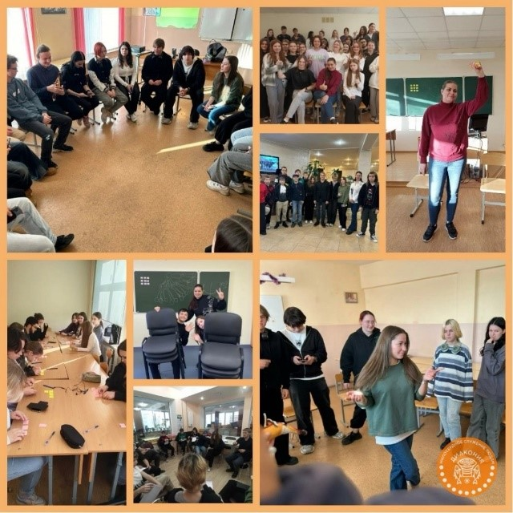

БЛАГОТВОРИТЕЛЬНЫЙ ФОНД МЕЖЦЕРКОВНОЙ ХРИСТИАНСКОЙ ДИАКОНИИ
Проект направлен на профилактику употребления наркотических средств и алкоголя (далее - ПАВ) среди молодежи и профилактику вовлечения молодежи в незаконный оборот наркотических веществ путем повышения уровня их информированности и развития системы духовно-нравственных ориентиров в поведении. Проект является продолжением успешной реализации мероприятий по профилактике употребления ПАВ среди подростков 14-18 лет в клубах СПб ГБУ ПМЦ «Лигово» в 2023 г.
Проект реализовывался в двух направлениях - первичная/вторичная профилактика (работа с молодежью от 14 лет) и третичная профилактика (работа с молодыми людьми от 18 лет, которые уже употребляют ПАВ и страдают от химической зависимости).
Инновационность проекта: реабилитация и ресоциализация молодежи от 18 до 35 лет, зависимых от ПАВ, путем реализации программы индивидуального медико-социального сопровождения на амбулаторном этапе, создания инклюзивной терапевтической среды в реабилитационной программе, психологическая помощь и программа поддержки выпускников.
Количество благополучателей: 1000 человек.
Количество волонтеров: 3 человек.